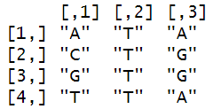

Türchen 4: PFM
Heii :), das vierte Türchen geht um die "Positionsspezifische Häufigkeitsmatrix (PFM)". Wir haben jetzt mehrere Sequenzen gegeben und wollen herausfinden wie oft die Basen an jeder Position vorkommen. Um einfach zu starten können wir diese 4 Sequenzen nehmen:
sequences = c("ATA", "CTG", "GTG", "TTA")
print(sequences)
Zuerst müssen wir die Sequenzen/String am besten jeweils aufsplitten damit wir besser mit ihnen arbeiten können.
Tipps:
- einfach strsplit() benutzen auf unseren Vektor/Liste
Damit geht es dann auf der nächsten page weiter :]
PFM - Seite 2
Lösung:
split_sequences = strsplit(sequences, "")
print(split_sequences)
Das Format wie unsere Sequenzen da liegen, ist nicht so praktisch, wir können jetzt versuchen aus der Liste eine Matrix zu erstellen, die als rows unsere Sequenzen hat und als columns die Position. So können wir bspw. einfach über das indexen herausfinden an welcher Position welche Base in jeder Sequenz liegt. Wenn wir es geschafft haben, würde uns position_matirx[1,1] = "A" liefern.
Tipps:
- probier den unlist() befehl aus
- wende dann auf die "unlisted" matrix() an und nimm die passende Dimension / Row anzahl
Auf der nächsten page gibt es dann die Lösuuung
PFM - Seite 3
Lösung:
anzahl_sequenzen = length(sequences)
position_matrix = matrix(unlist(split_sequences), nrow = anzahl_sequenzen, byrow = TRUE)
print(position_matrix)
wooow, der nervige Teil ist jetzt geschafft unsere Daten liegen jetzt im richtigen Format vor und wir können einfacher mit ihnen arbeiten. Jetzt wollen wir eine Funktion schreiben die die Position-Matrix übergeben bekommt und eine neue Matrix zurückgibt, die als Columns unsere Basen hat und als rows die Positionen. Dafür hätte ich wieder ein Frame, den wir zusammen nacheinander auffüllen können bis wir die fertige Funktion haben :]
count_frequencies = function(position_matrix) {
basen = c("A", "C", "G", "T")
frequency_matrix = matrix(0, nrow = ?, ncol = ?)
for (pos in 1:?) {
for (i in 1:?) {
frequency_matrix[pos, i] = ?
}
}
colnames(frequency_matrix) = basen
return(frequency_matrix)
}
Ahhh, nicht erschrecken, sieht bisschen kompliziert aus, aber es ist ganz einfach. Wir fangen erstmal an damit die frequency_matrix mit nullen aufgefüllt zu definieren. Du kannst dir hierbei überlgen, was die Anzahl an row's (nrow) und column's (ncol) sein muss.
Tipps:
- length() benutzen
PFM - Seite 4
Lösung:
count_frequencies = function(position_matrix) {
basen = c("A", "C", "G", "T")
frequency_matrix = matrix(0, nrow = ncol(position_matrix), ncol = length(basen))
for (pos in 1:?) {
for (i in 1:?) {
frequency_matrix[pos, i] = ?
}
}
colnames(frequency_matrix) = basen
return(frequency_matrix)
}
Soooo, jetzt wollen wir die Matrix mithilfe von zwei for schleifen befüllen. Du musst dir vorstellen das wir bei der oberen Schleife mit pos=1 anfangen und dann die untere Schleife einmal komplett durchlaufen mit i=1, i=2,... Wir wollen also zuerst für die erste Position alle Basen durchlaufen und weiter. Du kannst dir erstmal überlegen wie wir die Grenzen setzen müssen. Alsoo, was die maximale Anzahl an Positionen (pos) ist und wo wir die Info dafür herbekommen und was die maximale Anzahl an Basen (i) ist.
Tipps:
- ncol() und length() benutzen
PFM - Seite 5
Lösung:
count_frequencies = function(position_matrix) {
basen = c("A", "C", "G", "T")
frequency_matrix = matrix(0, nrow = ncol(position_matrix), ncol = length(basen))
for (pos in 1:ncol(position_matrix)) {
for (i in 1:length(basen)) {
frequency_matrix[pos, i] = ?
}
}
colnames(frequency_matrix) = basen
return(frequency_matrix)
}
okööö, jetzt wirds nicht unbedingt leichter, wir wollen jetzt unser (pos) und (i) aus den Schleifen zum befüllen nutzen. Stell dir mal vor, die Schleife läuft nur einmal durch, d.h. pos=1 und i=1. Wir füllen also den eintrag frequency_matrix[1,1] auf, d.h wie oft kommt in Position 1 die Base "A" vor. Würde die Schleife jetzt weiterlaufen, würde frequency_matrix[1,2] dran sein, also wie oft kommt "C" an Position 1 vor und weiter bis alle Basen dran waren und dann kommt Position 2 und das ganze wiederholt sich. Puuuuh, blickst du da durch? :O. Ist ein bisschen weird wenn man mehrere Schleifen benutzt. Wir müssen uns jetzt überlegen wie genau wir jetzt entsprechend (pos) für unsere position_matrix benutzen können und (i) für unsere Basen, damit wir die Häufigkeiten berechnen können.
Schauen wir uns dafür also am besten unsere Position_matrix an:
Wir sehen das wir uns immer die Spalten anschauen müssen, also position_matrix[,pos] und dort jeweils checken ob es basen[i] entspricht und falls TRUE, wollen wir das aufsummieren, das geht über sum(). Du kannst versuchen die Bedingung zu schreiben und dann wäre unsere Funktion auch fertig. Das wichtigste ist aber das du das Konzept halbwegs verstanden hast, wie wir die zwei For-Schleifen perfekt ausnutzen können.
PFM - Seite 6
Lösung:
count_frequencies = function(position_matrix) {
basen = c("A", "C", "G", "T")
frequency_matrix = matrix(0, nrow = ncol(position_matrix), ncol = length(basen))
for (pos in 1:ncol(position_matrix)) {
for (i in 1:length(basen)) {
frequency_matrix[pos, i] = sum(position_matrix[, pos] == basen[i])
}
}
colnames(frequency_matrix) = basen
return(frequency_matrix)
}
# Testen
frequency_matrix = count_frequencies(position_matrix)
print(frequency_matrix)
Juhuu, jetzt haben wir eine Matrix die angibt wie Häufig die jeweilige Base an der Position vorkommt. Hoffentlich konntest du was verstehen und das war nicht zu durcheinander, ist ein bisschen schwer das über Text zu erklären, aber ja vllt. konntest du dich ein bisschen reindenken und was daraus mitnehmen und jaaa tschaaauuu :)